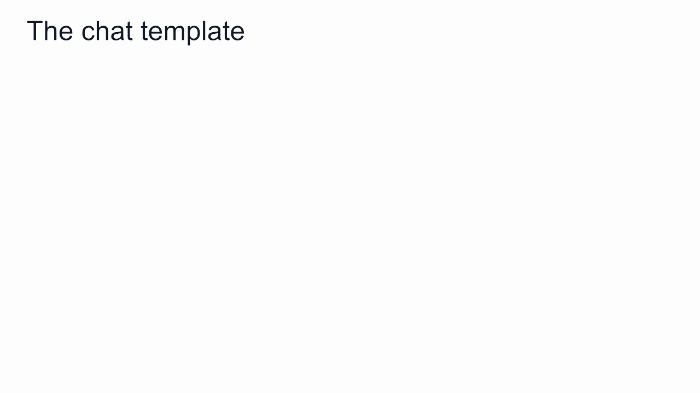
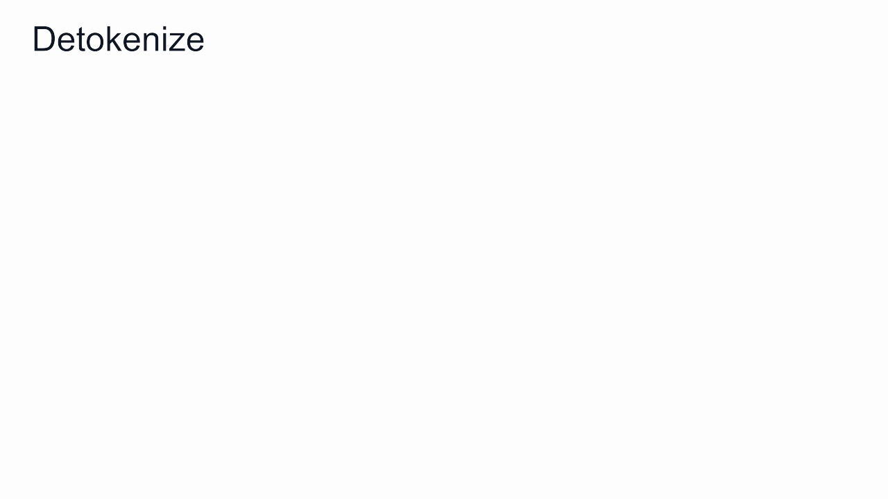

Tokenize once; then one forward pass per output token: logits → pick → append. Nine passes write the reply; <|im_end|> stops it.

The question is wrapped in role markers and special tokens; the answer starts on the empty line after "assistant".

The text is cut into vocabulary entries; each becomes its row number (real Qwen3 IDs). The model receives only the 13 numbers.

IDs select embedding rows; all 13 positions pass the layers together and leave K, V behind; only the last position reaches the LM head: 151,936 logits.

Softmax, temperature, top-p 0.9; greedy always takes Part, sampling gives Part, Open, Part, No, Part. Illustrative numbers.

Each pass feeds only the newest token; it reads the cache in every layer and adds its own K, V. The picked token drops back in as the next input.

IDs are looked up in reverse; the stop token is dropped, ␣ becomes a space, and the pieces join into the reply.
